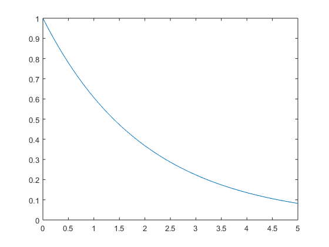

Practica 1:señales en tiempo continuo
Contents
Integrantes:
Rosales Perez Paola Monserrat
eobjkrdobgkijdtlfkbjmrodfigtjortjk
ledgvnwrjgnrkjeisrgjeirjgmorj
objetivos
- objetivo 1:
- Objetivo 2:
- objetivo 3:
- objetivo 4:
Introduccion
MATLAB blh blh
como alternat6iva kcvijoder
Desarrollo:
Problema 1
Problema 2
Problema 3
a= 1/2; f=@(t) exp(-a*t).*(t>=0); t = 0:0.1:5 plot (t,f(t))
t =
Columns 1 through 7
0 0.1000 0.2000 0.3000 0.4000 0.5000 0.6000
Columns 8 through 14
0.7000 0.8000 0.9000 1.0000 1.1000 1.2000 1.3000
Columns 15 through 21
1.4000 1.5000 1.6000 1.7000 1.8000 1.9000 2.0000
Columns 22 through 28
2.1000 2.2000 2.3000 2.4000 2.5000 2.6000 2.7000
Columns 29 through 35
2.8000 2.9000 3.0000 3.1000 3.2000 3.3000 3.4000
Columns 36 through 42
3.5000 3.6000 3.7000 3.8000 3.9000 4.0000 4.1000
Columns 43 through 49
4.2000 4.3000 4.4000 4.5000 4.6000 4.7000 4.8000
Columns 50 through 51
4.9000 5.0000
